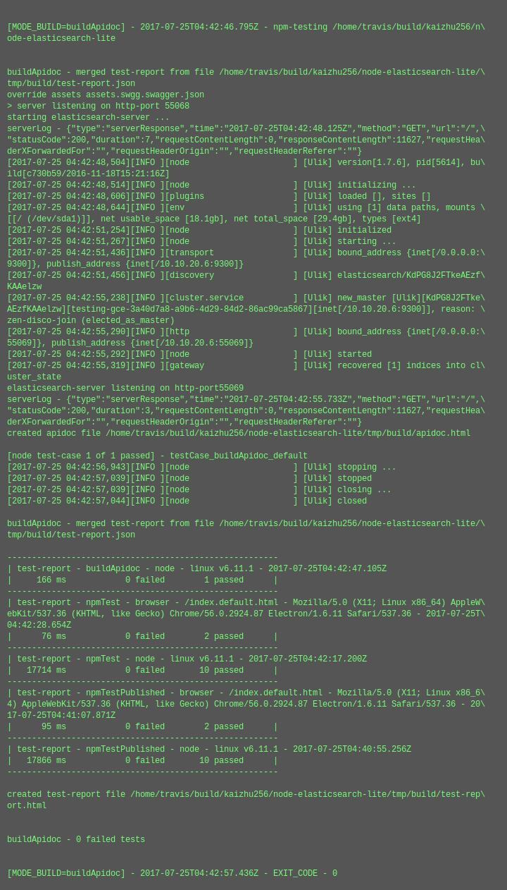
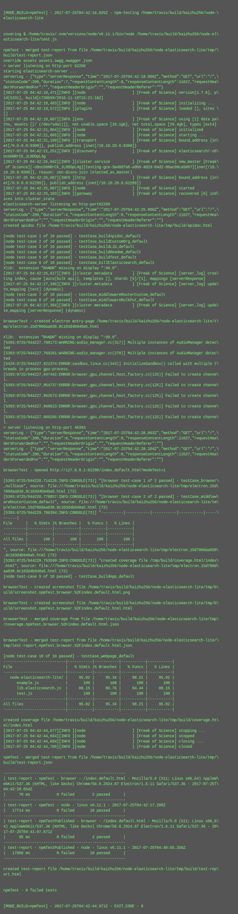
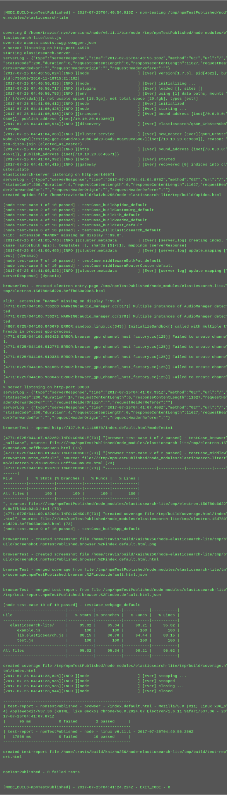

test-report for elasticsearch-lite (v2017.7.24)
summary
version-
2017.7.24
test date- 2017-07-25T04:42:47.129Z
commit info-
7164d0223e67619f87046f532a24764910de4a0f - [npm publish] - npm publish 2017.7.24 - add extra elasticsearch api /__info - add function local.middlewareBulkPut - add functional kibana demo - add info.title and info.description to swagger.json - add logstash for full elk stack - add quickstart shell example in README.md - remove file lib.elasticsearch.accounts._json
| total time-elapsed | total tests failed | total tests passed | total tests pending |
|---|---|---|---|
| 112387 ms | 0 | 25 | 0 |
1. buildApidoc - node - linux v6.11.1 - 2017-07-25T04:42:47.105Z

time-elapsed- 1524 ms
tests failed- 0
tests passed- 1
tests pending- 0
{kind=link}
| # | time-elapsed | status | test-case |
|---|---|---|---|
| 1 | 148 ms | passed | testCase_buildApidoc_default |
2. npmTest - browser - /index.default.html - Mozilla/5.0 (X11; Linux x86_64) AppleWebKit/537.36 (KHTML, like Gecko) Chrome/56.0.2924.87 Electron/1.6.11 Safari/537.36 - 2017-07-25T04:42:28.654Z

time-elapsed- 28584 ms
tests failed- 0
tests passed- 2
tests pending- 0
| # | time-elapsed | status | test-case |
|---|---|---|---|
| 2 | 0 ms | passed | testCase_browser_nullCase |
| 3 | 57 ms | passed | testCase_middlewareRouterCustom_default |
3. npmTest - node - linux v6.11.1 - 2017-07-25T04:42:17.200Z

time-elapsed- 31466 ms
tests failed- 0
tests passed- 10
tests pending- 0
{kind=link}
| # | time-elapsed | status | test-case |
|---|---|---|---|
| 4 | 69 ms | passed | testCase_buildApidoc_default |
| 5 | 7036 ms | passed | testCase_buildApp_default |
| 6 | 0 ms | passed | testCase_buildCustomOrg_default |
| 7 | 1 ms | passed | testCase_buildLib_default |
| 8 | 9 ms | passed | testCase_buildReadme_default |
| 9 | 1 ms | passed | testCase_buildTest_default |
| 10 | 3 ms | passed | testCase_killElasticsearch_default |
| 11 | 1413 ms | passed | testCase_middlewareBulkPut_default |
| 12 | 1398 ms | passed | testCase_middlewareRouterCustom_default |
| 13 | 17564 ms | passed | testCase_webpage_default |
4. npmTestPublished - browser - /index.default.html - Mozilla/5.0 (X11; Linux x86_64) AppleWebKit/537.36 (KHTML, like Gecko) Chrome/56.0.2924.87 Electron/1.6.11 Safari/537.36 - 2017-07-25T04:41:07.871Z

time-elapsed- 109369 ms
tests failed- 0
tests passed- 2
tests pending- 0
| # | time-elapsed | status | test-case |
|---|---|---|---|
| 14 | 0 ms | passed | testCase_browser_nullCase |
| 15 | 73 ms | passed | testCase_middlewareRouterCustom_default |
5. npmTestPublished - node - linux v6.11.1 - 2017-07-25T04:40:55.256Z

time-elapsed- 112387 ms
tests failed- 0
tests passed- 10
tests pending- 0
{kind=link}
| # | time-elapsed | status | test-case |
|---|---|---|---|
| 16 | 70 ms | passed | testCase_buildApidoc_default |
| 17 | 7199 ms | passed | testCase_buildApp_default |
| 18 | 0 ms | passed | testCase_buildCustomOrg_default |
| 19 | 1 ms | passed | testCase_buildLib_default |
| 20 | 9 ms | passed | testCase_buildReadme_default |
| 21 | 1 ms | passed | testCase_buildTest_default |
| 22 | 1 ms | passed | testCase_killElasticsearch_default |
| 23 | 1455 ms | passed | testCase_middlewareBulkPut_default |
| 24 | 1446 ms | passed | testCase_middlewareRouterCustom_default |
| 25 | 17694 ms | passed | testCase_webpage_default |